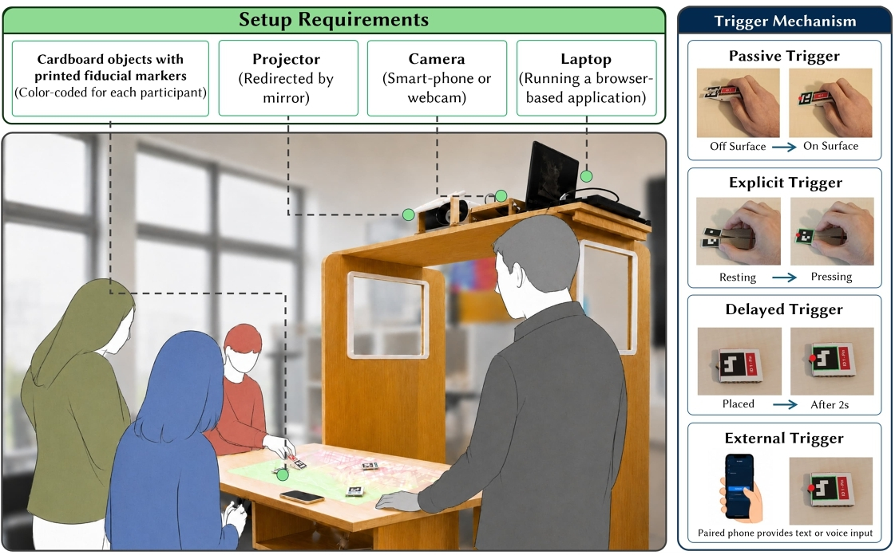

2026 · Publication · NordiCHI ’26 Adjunct
Toward Low-Barrier
Participatory Mapping
Workshops
Designing Marker-Based Tangible Interactions for Projected Tabletops
Cardboard objects carrying printed fiducial markers turn an ordinary table into a shared, projected map by replacing both the specialised hardware of digital tabletops and the hand tracking that fails under projector light.

Overview
Participatory mapping brings local knowledge into urban planning, but its tools force a trade-off. Pen and paper is accessible yet captures nothing automatically and digital tangible tabletops record everything but demand specialised, expensive hardware. Off-the-shelf projectors and cameras can turn an ordinary surface into an interactive display, though the implementations that exist mostly track hand gestures—unreliable under projector lighting.
This work moves the interaction from the hand to the object. Printed fiducial markers track robustly but are inherently passive, with no established interaction vocabulary of their own, so the prototype gives colour-coded cardboard tools four distinct ways to trigger an action on a browser-based projected map.
The design was developed iteratively across three workshops with twelve participants, using their feedback to improve reliability, expressiveness, and collaboration.